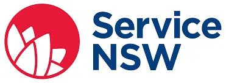
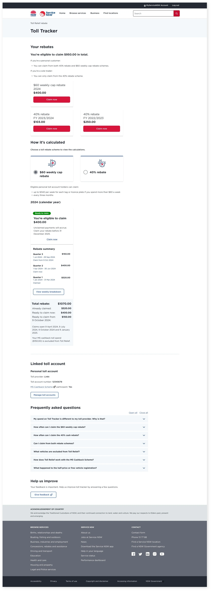
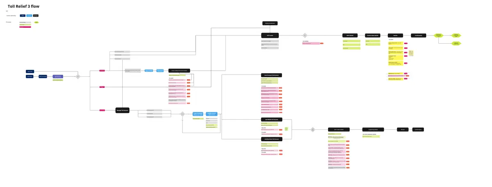
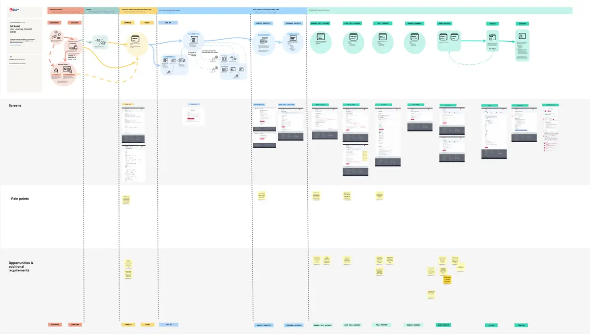
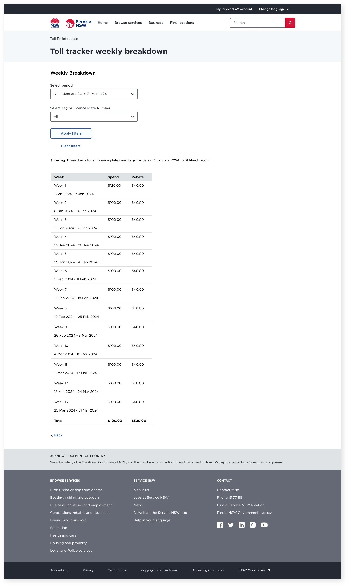
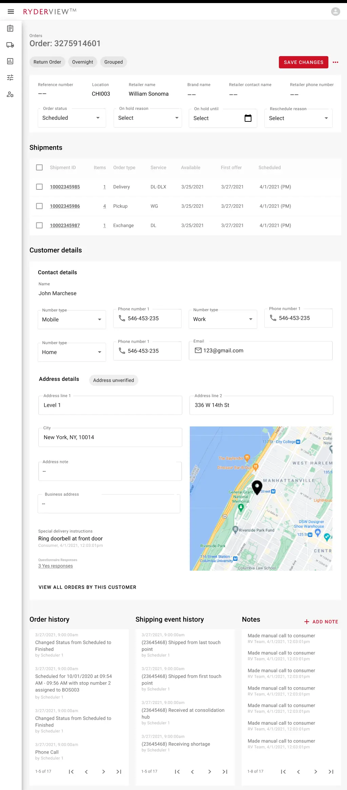
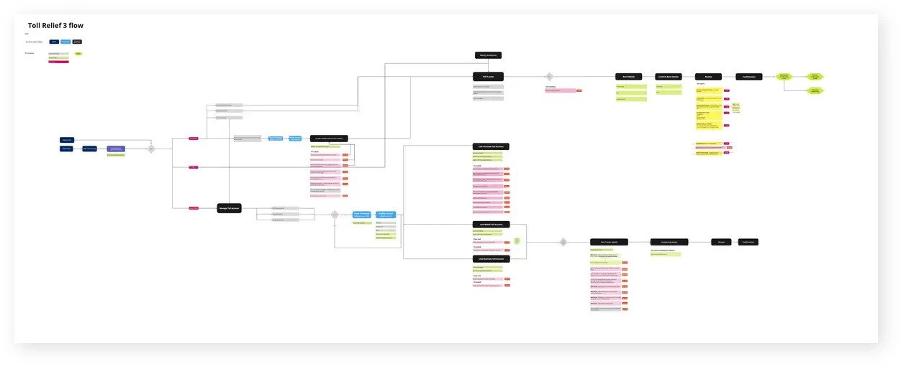
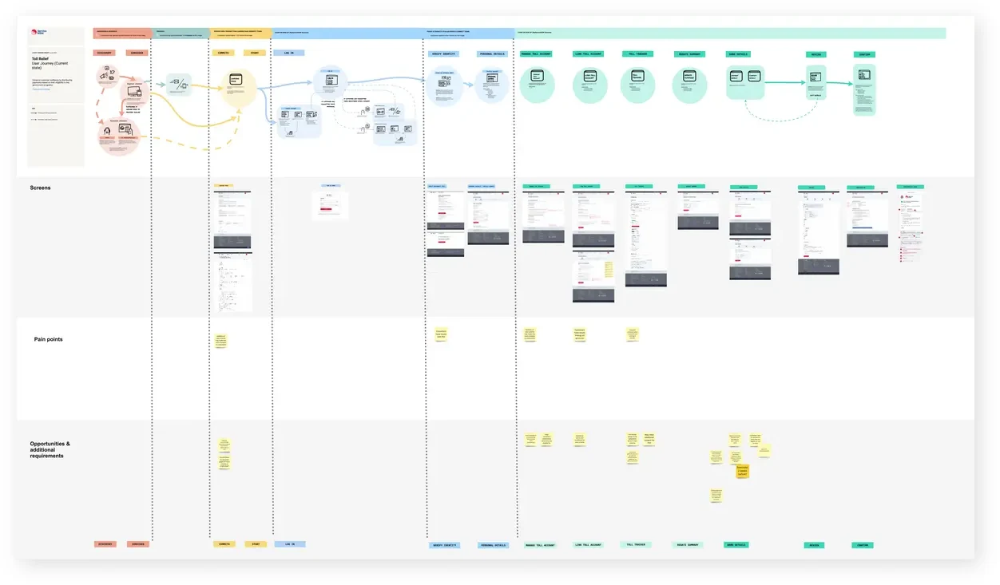
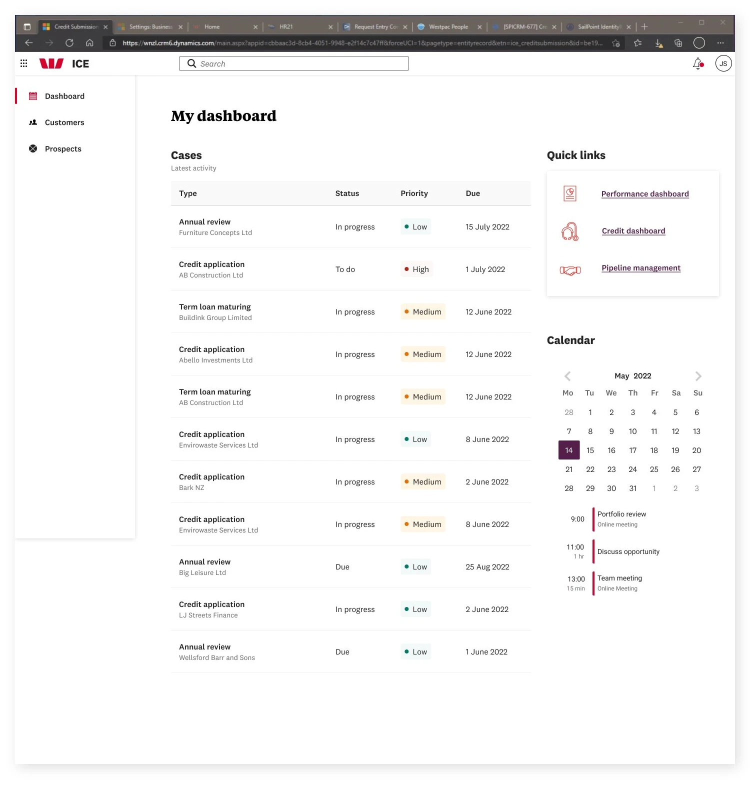

Case studies
* * * * *
Service NSW · Transport for NSW
Toll Relief
product design
My role
Lead Product Designer within an Agile squad of Engineers and Product Management, collaborating with internal and external stakeholders and partners.
Overview
As part of an election promise, the NSW state government pledged $560 million in rebates to motorists using state toll roads. The scheme refunds toll expenditure over $60 per week per tag or licence plate, up to $400 per tag.
Owned by Transport for NSW, online registration and claiming was handled by Service NSW. As Lead Product Designer, I was tasked with providing a seamless way for motorists to register and make claims.
Approach
- Extensive review of the existing product to identify pain points, delivered as a current state customer journey map
- Workshops with stakeholders, internal staff, external agencies and partners to define requirements
- Definition of user flows in collaboration with engineers and product management
- Guerrilla testing within Service NSW centres and testing with an accessible cohort
- Screen design development with regular showcasing to stakeholders
- Liaison with engineers to ensure built product met customer needs
Solution
Designs moved from sketch to working prototype, tested at each stage and refined accordingly. Using the Service NSW design system (GEL), page designs used established components to deliver a consistent, predictable, and accessible experience.
A key challenge was communicating two separate toll relief schemes simultaneously. Feedback mechanisms were embedded and monitored regularly.
Outcomes




Ryder · United States
Last mile delivery
experience design
My role
Lead UX Designer, overseeing a team comprising a researcher and designer, integrated with a US based client and offshore development team.
Overview
Ryder was facing profound challenges in their Last Mile business. E-commerce growth had exposed operational inefficiencies, legacy technology inhibited innovation, and nimble competitors threatened market position.
Rising retailer and consumer expectations around status visibility, customisability, and communication options demanded an uplift of the entire B2B2C customer experience.
Approach
Stakeholder, customer, and user interviews gave comprehensive insight into current workflows and task dependencies. Overlaying pain points with needs, users ideated a future vision via remote co-design workshops.
We defined a solution concept, helped prioritise features into an MVP, then embedded with Ryder's technology group to deliver over two agile release cycles.
Solution
An intuitive, unified experience for Ryder Last Mile staff, customers, and end consumers, integrating seamlessly with existing off-the-shelf solutions.
The design streamlined IA and task flows, minimised screen volume and nesting, and reduced cognitive load through radically simplified layouts and interactions.
A library of UI and interaction patterns ensures future-proof consistency throughout coming releases.



Westpac
Institutional banking
system design
My role
Lead UX Designer, within a large cross-functional consultancy team.
Overview
Regulatory change required Westpac to bring off-shore institutional banking systems on-shore. The change also presented an opportunity to consolidate multiple systems using an existing platform.
Working closely with bankers, stakeholders, and the wider design team, the goal was to rapidly build an MVP while simultaneously demonstrating future state capability.
Approach
As part of a broader team of business analysts, solution architects, and developers, we conducted workshops to understand and prioritise requirements, then worked closely with the product owner on staff-specific requirements.
Screen designs were tested with users and the wider business to evaluate business logic, rules, and functionality, with feedback feeding into further iterations.
Solution
A series of streamlined processes and designs, validated with the staff who use them every day. The design enabled a user stories backlog for implementation and confirmed the suitability of Westpac's chosen future platform.
Screen designs made use of the existing Westpac design system, allowing efficiencies in output and easy alignment with the internal design team.
